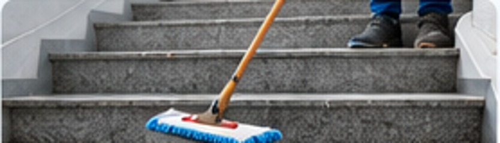

Unterhaltsreinigung
Regelmäßige Sauberkeit und Hygiene für Ihre Räumlichkeiten.
FOM FACILITY OBJEKT MANAGEMENT
Professionelle Reinigungs- und Facility-Dienstleistungen für Unternehmen, öffentliche Einrichtungen und Privathaushalte in Kaufbeuren und Umgebung.
UNSERE LEISTUNGEN
Professionelle Reinigung und Objektbetreuung für Gewerbe, öffentliche Einrichtungen und Privathaushalte – zuverlässig, flexibel und passend zu Ihrem Bedarf.
Regelmäßige Sauberkeit und Hygiene für Ihre Räumlichkeiten.
Sicher durch den Winter – zuverlässig und pünktlich.
Gepflegte Außenanlagen zu jeder Jahreszeit.
Zuverlässige Betreuung rund um Ihre Immobilie.
Streifenfreie Sauberkeit und klare Sicht.
Gründlich sauber nach Bau und Renovierung.
Ein sauberes Arbeitsumfeld für mehr Wohlbefinden.
Professionelle Unterstützung für Ihr Zuhause.

Ein gepflegter erster Eindruck für Ihr Gebäude.
Saubere Parkflächen und ein gutes Erscheinungsbild.
FOM FACILITY OBJEKT MANAGEMENT
Ob laufende Unterhaltsreinigung, saisonaler Winterdienst oder Betreuung Ihrer Außenanlagen: FOM bündelt verschiedene Leistungen rund um Sauberkeit und Objektpflege.
Sie nennen uns Ihren Bedarf. Wir stimmen die passende Leistung mit Ihnen ab und erstellen ein individuelles Angebot.
Jetzt Anfrage senden →SO EINFACH GEHT'S
Teilen Sie uns kurz mit, welche Leistung und welches Objekt Sie betreuen lassen möchten.
Wir klären Umfang, Häufigkeit und Besonderheiten persönlich mit Ihnen.
Sie erhalten ein transparentes und auf Ihren Bedarf abgestimmtes Angebot.
KONTAKT
Schreiben Sie uns unverbindlich. Wir melden uns bei Ihnen zurück.
MITARBEITERBEREICH
Nach Freigabe der Website kann hier der geschützte Mitarbeiter-Login ergänzt werden.